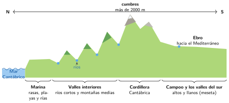
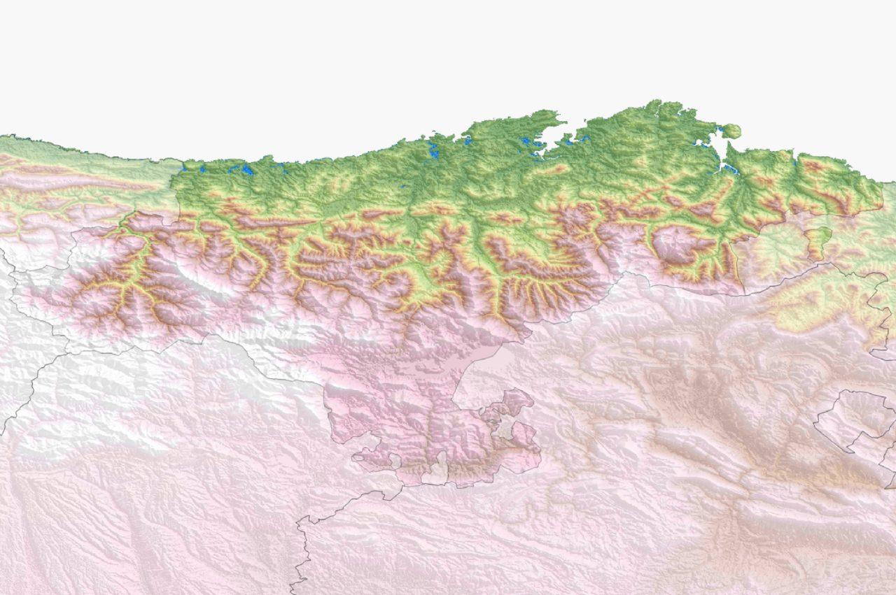

Relieve y principales unidades geográficas
Criterios: PN 1.1, PN 6.1
🤔 Pienso5 min
Qué hago aquí: Piensa un momento y contesta con lo que ya sabes. No pasa nada si no lo sabes: es para empezar.
Imagina que viajas en coche de Santander a Reinosa. ¿Cómo cambia lo que ves por la ventanilla? Dibuja o describe el camino.
✏️ Puedes responder escribiendo, con un dibujo o un esquema, o contándolo en voz alta.
📖 Leo y aprendo15 min
Qué hago aquí: Lee despacio, mira los dibujos y los ejemplos, y quédate con la idea clave del final.
Cantabria es una tierra de montaña junto al mar. En muy pocos kilómetros se pasa del nivel del mar a más de 2000 metros. Por eso, de norte a sur, distinguimos tres grandes unidades del relieve:


Foto: No machine-readable author provided. Tony Rotondas assumed (based on copyright claims). · CC BY 2.5 · Physical map of Cantabria - Spain.png
✏️ Hago25 min
Qué hago aquí: Haz las actividades en orden. Empieza siempre por las básicas.
Completa una tabla en tu cuaderno con las tres unidades del relieve. Columnas: formas del terreno, altitud aproximada, dónde vive la gente y un lugar de ejemplo.
Clasifica estos lugares en su unidad del relieve. Después justifica tres de ellos con un rasgo del paisaje.
Elige el grupo de cada uno.
Observa el corte de norte a sur. ¿Qué vertiente de la cordillera es más corta y empinada, la que mira al mar o la que mira a la meseta? ¿Qué consecuencia tiene eso para los ríos que bajan al Cantábrico?
El Ebro nace en Campoo, muy cerca del mar Cantábrico, pero desemboca en el Mediterráneo, a más de 900 km. Explica por qué, usando la palabra divisoria de aguas.
Explica por qué casi toda la población, la industria y las grandes vías de comunicación de Cantabria están en la Marina. Después señala dos problemas que causa esa concentración (en el paisaje, en la vivienda, en los pueblos de montaña…).
La autovía y el tren de Santander a la meseta suben por el valle del Besaya hasta Reinosa. ¿Por qué crees que se eligió ese valle y no otro? Mira el mapa físico y fíjate en la altura de los puertos.
Haz un esquema de llaves del relieve de Cantabria con tres niveles: unidad, formas del terreno y ejemplos de lugares.
✏️ Puedes responder escribiendo, con un dibujo o un esquema, o contándolo en voz alta.
🚀 Amplío (si quieres saber más)
Qué hago aquí: ¿Has terminado? Lee la curiosidad o elige el reto. Es voluntario.
La pendiente mide cuánto sube el terreno: pendiente (%) = desnivel ÷ distancia × 100. Torre Blanca (unos 2600 m) está a unos 15 km en línea recta de Potes (unos 300 m). Calcula la pendiente media. Haz lo mismo entre Reinosa (850 m) y Aguilar de Campoo (unos 900 m, a 25 km). ¿Qué te dicen los dos resultados sobre las dos vertientes de la cordillera?
✅ Compruebo5 min
Qué hago aquí: Contesta sin mirar la ficha y marca cómo lo llevas.